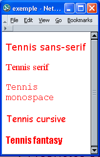
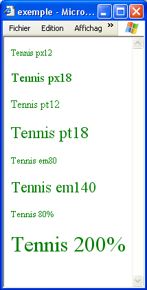
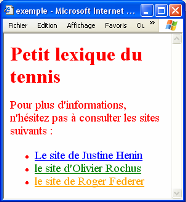
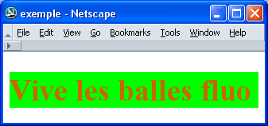
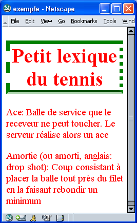

Introduction :
Nous savons maintenant que ce sont les CSS qui permettent d'habiller, de "décorer" les pages HTML. Dans un premier temps, nous allons préciser les attributs propres aux caractères. Nous allons ensuite passer en revue les propriétés les plus fréquemment utilisées dans le CSS. Pour terminer, nous verrons comment modifier l'aspect des liens grâce au CSS.
Textes :
Un soin particulier est apporté à la forme du texte en définissant le type de police, la taille des caractères ou encore la couleur.
La taille :
Pour préciser la taille des caractères, il existe plusieurs types de mesure :
On a deux types d'unités en CSS : les unités relatives et les unités absolues. Quand on parle du viewport, on parle de la fenêtre (notre navigateur).
- Le prixel (px) :
- Cette taille est relative à la définition de l'écran, qui est définie en pixels (un pixel est un point de l'écran qui va être vu confortable par un oeil humain à un bras de distance de votre écran). 1px est un petit carré de 0,2 mm de côté. Cette unité sera absolue car un pixel sera tout le temps un pixel.
- Le point (pt) :
- Cette taille que vous trouverez dans les traitements de texte se réfère à la taille typographique. 12pt est la taille normale d'une police.
- Le pourcentage (%) :
- Le pourcentage permet de préciser une taille relative à la taille normale d'une police.
- L'unité em (em) :
- Cette taille correspond à un rapport à la taille normale d'une police. 1em correspond à 100% de la taille normale de la police, 1.4em à 140% etc.
- L'unité rem (rem) :
- Cette taille correspond à un rapport à la taille normale d'une police de l'élément racine (html). De base, 1rem est égal à 16px.
- Le viewport width (vw) :
- Cette taille va être relative au viewport et à sa largeur.
- Le viewport height (vh) :
- Cette taille va être relative au viewport et à sa hauteur.
La police :
Il existe 5 familles de polices de caractèères :
- sans-serif :
- Cette famille comprend les polices à caractères bâtons, les plus lisibles à l'écran : Verdana, Arial, Arial Black, Trebuchet MS, Geneva.
- serif :
- Ce sont les polices à empattements (serif en anglais) qui sont en général utilisées par les journaux : Times, Times New Roman, Georgia.
- Monospace :
- Les caractères ont une largeur fixe. Ces polices servent à illustrer les codes informatiques : Courier, Courier New, Andale Mono.
- Cursive :
- Les polices ressemblent à l'écriture manuscrite : Comic Sans, Apple Chancery.
- Fantasy :
- On trouve ici des polices stylées et décoratives rarement utilisées dans les pages web professionnelles : Last Ninja, Impact.
La couleur :
À l'orgine, les écrans des smartphones utilisaient la technologie LCD (Liquid Crystal Display). C'est-à-dire qu'ils bénéficiaient d'un rétroéclairage uniforme, positionné derrière une matrice à cristaux liquides permettant de colorer cette lumière blanche. Avec cette technologie, toutes les couelurs ontla même consommation électrique.
De nos jours, la plupart des smartphones utilisent la technologie AMOLED (Active-Matrix Organic Light-Emitting Diode). Elle remplace petit à petit la technologie LCD. Les écrans AMOLED sont constitués d'une matrice de LED indépendantes. La consommation électrique varie donc suivant la couleur qui est affichée par les LED. Une zone de couleur noire aura ses LED éteintes. Mais toutes les autres couleurs ne se valent pas. Généralement, le vert consomme moins que le rouge qui consomme moins que le bleu et le blanc. Ceci n'est pas négligeable puisque des tests ont montré qu'avec un même niveau de luminosité, l'autonomie de la batterie peut passer de 5h30 à 12 heures suivant la couleur affichée.
Les designers ont donc tout intérêt à privilégier un thème sombre et à préférer du vert ou du rouge plutôt que du blanc ou du bleu. Il faut évidemment que cela respecte les contrastes minimums pour que le site soit accessible à tous.
Il est possible de proposer un thème clair et un thème foncé, et en fonction des préférences système de l'utilisateur, le thème aadéquat est utilisé. Cela est possible grâce à la media query prefers-color-scheme.
Sous Windows, pour configurer cette préférence, il faut ouvrir les paramètres (menu Démarrer, Paramètres), cliquez sur Personnalisation, puis sur couleurs. Enfin, il faut choisir Sombre ou Clair dans la liste de sélection Choisissez votre couleur.
Exemple :
body {
color: darkblue;
background-color: floralwhite;
}
@media (prefers-color-scheme: dark) {
body {
color: #e6ffc2;
background-color: #494949;
}
}Remarque : bien que la media query prefers-color-scheme appartienne aux Media Queries Level 5 qui sont encore à l'état de brouillon au moment de l'écriture de ces lignes, elle est déjà bien supportée par la plupart des navigateurs modernes.
En HTML, deux façons de préciser une couleur coexistent :
-
Via le nom de la couleur.
À la base en HTML, 16 couleurs possèdent un nom. Dans le tableau qui suit, ces couleurs sont présentées en couleur de fond avec leur nom et leur code associé :
aqua #00FFF black #000000 blue #0000FF fuchsia #FF00FF green #008000 lime #00FF00 maroon #800000 navy #000080 olive #808000 purple #800080 red #FF0000 silver #C0C0C0 teal #008080 white #FFFFFF yellow #FFFF00 gray #808080 -
Via le code hexadécimal de la couleur.
L'hexadécimal sera largement étudié dans le cours de langage d'assemblage.
Il est pourtant intéressant pour vous de comprendre le principe des couleurs. Votre écran, pour afficher les couleurs, fait un mélange de trois composantes : le rouge, le vert et le bleu. Ceci donne naissance au système de couleurs RVB (Rouge, Vert, Bleu) ou RGB (Red, Green, Blue) en anglais.
Si on veut décrire une couleur, on doit décrire la proportion de chacune des trois couleurs de base, sachant que le blanc est obtenu en mélangeant la quantité maximale (symbolisée par FF que vous comprendrez dès quevous aurez étudié l'hexadécimal) des trois couleurs. Le noir est obtenu en mettant la quantité minimale (00) des trois couleurs.
Quelques exemples :
Blanc s'obtient donc par #FFFFFF ce qui signifie FF de rouge, FF de vert, FF de bleu.
Noir s'obtient par #000000, vert pur par #00FF00, etc.
Vous avez compris qu'il suffit de changer un des chiffres pour obtenir une autre couleur.
Toutes les couleurs ne sont pas web safe et on se contentera de combiner les trois couleurs en utilisant les six quantités (00, 33, 66, 99, CC et FF), ce qui nous donne 216 couleurs (ou 6 à la puissance 3). Si vous voulez en savoir plus sur le sujet, consulter la bibliographie du cours ou par exemple la page couleurs du Web de Wikipédia.
Listes des propriétés :
Rappelons-nous au départ que ces propriétés ont une valeur par défaut. L'introduction d'une propriété modifie cette valeur par défaut.
Ajoutons enfin qu'il existe beaucoup de différences entre les navigateurs. Certains conseils vous seront données pour éviter les mauvaises surprises. La liste des propriétés et de leurs attributs que vous trouverez ci-dessous n'est pas exhaustive mais elle reprend les plus élémentaires. Libre à vous de vouloir aller plus loin.
Dans certains exemples qui suivent, les propriétés ont toujours été appliquées au sélecteur classe mais celles-ci peuvent évidemment être appliquées à d'autres sélecteurs (h1, h2, p, ...).
Propriétés portant sur les caractères :
- font-family :
-
La propriété font-family définit la police de caractères à utiliser. Normalement, on prévoit plusieurs polices car certaines polices ne se trouvent que sur certaines plateformes (Windows, Linux, Mac). Les navigateurs utiliseront la première police de la liste qui est présente sur l'ordinateur. Il est conseillé de toujours préciser la famille générique en fin de liste dans le cas où aucune des polices de la liste n'est disponible. Lorsque le nom de la police est composé de plusieurs mots, on peut le mettre entre guillemets.
| Le code HTML : | Le CSS : | L'affichage : |
|---|---|---|
|
<p class="sans-serif"> Tennis sans-serif</p> |
.serif { font-family: Verdana, Arial, sans-serif; } |
 |
|
<p class="serif"> Tennis serif</p> |
.serif { font-family: "Times New Roman", Georgia, serif; } |
|
|
<p class="monospace"> Tennis monospace</p> |
.monospace { font-family: "Andale Mono", Courier, Monospace; } |
|
|
<p class="cursive"> Tennis cursive</p> |
.cursive { font-family: "Apple Chancery", Cursive; } |
|
|
<p class="fantasy"> Tennis fantasy</p> |
.fantasy { font-family: Impact, Fantasy; } |
- font-size :
-
font-size peut prendre les valeurs suivantes :
-
Une valeur numérique suivie de px sans espace qui est la taille précise des caractères.
font-size: 14px;
-
Une valeur numérique suivie de % sans espace qui est la taille relative des caractères par rapport à la taille par défaut.
font-size: 200%; doublera la taille des caractères par défaut.
-
Une valeur numérique suivie de em sans espace qui est un coefficient multiplicateur de la taille par défaut.
font-size: 1.2em;
-
Un mot-clé : xx-small (équivalent de 6.9pt), x-small (équivalent de 8.3pt), small (équivalent de 10pt), medium (12pt valeur initiale), large (équivalent de 14.4pt), x-large (équivalent de 17.28pt), xx-large (équivalent de 20.7pt).
Il est conseillé de choisir pour body un des mots-clés comme taille de caractères et de définir toutes autres tailles de caractères relativement à body à l'aide de % ou em. Il sera alors très simple de changer la taille de toute la page en modifiant uniquement la taille assignée à body.
-
| Le code HTML : | Le CSS : | L'affichage : |
|---|---|---|
|
<p class="px12">Tennis px12</p> |
.px12 { font-size: 12px; } |
 |
|
<p class="px18">Tennis px18</p> |
.px18 { font-size: 18px; } |
|
|
<p class="pt12">Tennis pt12</p> |
.pt12 { font-size: 12pt; } |
|
|
<p class="pt18">Tennis pt18</p> |
.pt18 { font-size: 18pt; } |
|
|
<p class="em80">Tennis em80</p> |
.em80 { font-size: 0.8em; } |
|
|
<p class="em140">Tennis em140</p> |
.em140 { font-size: 1.4em; } |
|
|
<p class="p80">Tennis 80%</p> |
.p80 { font-size: 80%; } |
|
|
<p class="p200">Tennis 200%</p> |
.p200 { font-size: 200%; } |
- font-weight :
- font-weight permet de définir le niveau de gras du caractère; soit normal, soit bold.
- font-style :
- font-style peut prendre les valeurs normal, italic ou oblique.
- text-align :
- Cette propriété sert à aligner le texte au centre, à gauche ou à droite (center, left, right).
- text-decoration :
- Cette propriété permet de décorer le texte, c'est-à-dire de le surligner, le faire clignoter, ... (underline, overline, blink, line-through).
- color :
- Cette propriété sera décrite danns le point suivant.
- @font-face :
-
Cette propriété permet d'utiliser une police externe. Attention, il vous faudra sans doute importer plusieurs fichiers, les navigateurs privilégiant chacun leur propre format.
@font-face { font-family: 'mapolice'; /* IE */ src: url('fichier.eot'); /* Firefox */ src: url('fichier.woff'); } - text-shadow :
-
Cette propriété permet de créer une ombre pour un texte.
Cette propriété possède la syntaxe suivante : text-shadow : X, Y, Z, couleur.
X représente le décalage horizontal de l'ombre.
Y présente le décalage vertical de l'ombre.
Z représente le flou de l'ombre.
Liens :
Le lien est un des concepts les plus importants du Web puisqu'il permet d'interconnecter de l'information. Par défaut, un lien est bleu et souligné. Avec le CSS, on peut appliquer des règles de style sur des liens en fonction de leur état : non visité, actif (c'est sur ce lien que j'ai cliqué), visité (j'ai déjà consulté ce lien auparavant mais j'en suis sorti - par défaut, il devient mauve) ou survolé (je suis en train de passer sur le lien avec ma souris).
En utilisant certaines propriétés déjà vues, nous pourrions créer des règles de style pour chacun des états d'un lien.
Dans le CSS, on précisera le sélecteur de lien (a) suivi de son état et puis entre accolades les règles de style à appliquer.
- a:link représente les liens à l'état "non visité".
- a:hover représente les liens à l'état "survolé".
- a:actif représente les liens à l'état "actif".
- a:visited représente les liens à l'état "visité".
Exemple :
Observons le code HTML suivant :
<ul>
<li><a href="http://www.justine-henin.be/public/index.asp?lang=fr">Le site de Justine Henin</a></li>
<li><a href="http://www.olivier-rochus.be/public/">Le site d'Olivier Rochus</a></li>
<li><a href="http://www.rogerfederer.com/fr/index.cfm">Le site de Roger Federer</a></li>
</ul>et le qui lui est associé :
| Le CSS : | L'affichage : |
|---|---|
|
a:link { color: blue; } |
 |
|
a:hover { color: orange; } |
|
|
a:actif { color: red; } |
|
|
a:visited { color: green; } |
Le site d'Olivier Rochus a déjà été consulté (il est donc en vert), le curseur est en train de survoler celui de Roger Federer (il est donc en orange).
Les liens ne sont Malheureusement plus cliquables sur une feuille de papier ! Il est néanmoins possible d'imprimer entre parenth!ses l'adresse vers laquelle ils pointent :
a[href]::after {
content : " (" attr(href) ")";
}Couleurs et images de fond :
- background-color :
-
background-color définit la couleur de fond de l'élément. Comme déjà vu ci-dessus, il y a plusieurs manières d'indiquer une couleur.
background-color: orange;
background-color: rgb(80%, 40%, 0%);
background-color: rgb(204, 102, 0);
background-color: #CC6600;
Ce sont les différents moyens pour obtenir un fond orange.
- background-image :
-
Cette propriété permet de placer une image derrière un élément de votre page.
Avec le CSS3, cette propriété permet également de réaliser un dégradé de couleur comme image de fond. Attention, toutefois les instructions sont différentes suivants les navigateurs, il faudra donc ajouter une instruction par navigateur que l'on veut supporter ! Voici des exemples :
background-image { url: ('masuperimagedefond.png'); }/* dégradé de bleu */ /* navigateur Mozilla Firefox */ background-image: -moz-linear-gradient(top, #77DCFB, #0AAFE1); /* navigateur Chrome 10 et suivants ainsi que pour Safari 5.1 et suivants */ background-image: -webkit-linear-gradient(top, #77DCFB, #0AAFE1); /* navigateur Opera */ background-image: -o-linear-gradient(top, #77DCFB, #0AAFE1); /* navigateur IE 10 et suivants */ background-image: -ms-linear-gradient(top, #77DCFB, #0AAFE1); - color :
-
color permet de spécifier la couleur du texte.
color: red;
L'exemple qui suit illustre deux des propriétés portant sur les couleurs.
| Le CSS : | L'affichage |
|---|---|
|
h1 { background-color: #00FF00; color: rgb(80%, 40%, 0%); } |
 |
Le modèle de boîtes et CSS :
En CSS, les éléments de structure sont vus comme des boîtes. Le CSS permet de contrôler les propriétés des boîtes, et donc l'aspect de la page HTML.

- Chaque boîte a une aire de contenu (contents) dont la taille s'adapte automatiquement à la quantité du contenu, c'est le navigateur qui en calcule les dimensions.
- L'aire peut être entourée d'une bordure (border) qui peut avoir une épaisseur, une couleur et un style propres.
- Il existe une largeur d'espacement (qui peut être nulle) entre le contour de l'aire et le contenu de celle-ci (padding).
- Enfin, la marge (margin) encadre la bordure. La marge fournit le moyen de créer un espace entre les différents éléments d'une page. Quand deux boîtes sont côte à côte, les marges permettent de maintenir un espace entre elles.
L'espacement et la marge peuvent être différents en haut, en bas, à gauche et à droite. Ils sont transparents, n'ont ni couleur, ni décoration.
Par défaut, la marge et l'espacement sont nuls et il n'y a pas de bordure.
Les propriétés des boîtes :
Les dimensions :
Les dimensions (height / width). Nous pouvons fixer les dimensions d'une boîte grâce aux propriétés height et width. Par rapport à l'image ci-dessus, ces deux propriétés fixent la partie "content". Ces deux propriétés ont par défaut la valeur auto, c'est alors le navigateur qui calcule les dimensions.
height: 200px;
width: 200px;Les bordures (border) :
Ces mêmes propriétés seront utilisées par la suite dans les tableaux. Les bordures peuvent avoir une couleur, une épaisseur de trait, un style :
border-color: black;
/* voir les couleurs */
border-width: 1px;
border-style: solid;L'épaisseur s'exprime en pixels ou à l'aide d'un mot-clé : thin, medium, thick.
Il existe 8 styles de bordures : solid, dotted, dashed, inset, ridge, outset, double, groove. Les quatres côtés sont indépendants et peuvent donc être différents en haut, à droite, en bas ou à gauche (top, right, bottom, left).
border-top-color: black;
border-bottom-style: groove;Si on désire donner un style différent aux quatre côtés de la bordure, on peut écrirer la priorité de manière condensée :
border-style: solid groove solid groove;L'ordre dans lequel sont énoncées les valeurs est important. Celles-ci décrivent successivement le haut, la droite, le bas et la gauche de la bordure.
L'exemple qui suit illustre ces propriétés :
| Le CSS : | L'affichage : |
|---|---|
|
 |
Une nouveauté apparue avec le CSS3 est la possibilité de créer des bordures arrondies. Ceci se fait de la manière suivante :
p {
/* définition d'une bordure de manière raccourcie */
border: 1px solid #36B0D9;
/* Ici, l'angle aura une "importance" de 10 pixels pour les quatre angles. */
/* Il faut également répéter cette instruction pour tous les navigateurs */
border-radius: 10px;
-moz-border-radius: 10px;
-webkit-border-radius: 10px;
-moz-border-radius: 10px;
}L'espacement (padding) :
La propriété padding crée un espacement sur les côtés du contenu entre ce contenu et le contour. Le padding s'exprime soit en pixels, soit en pourcentage. Sa valeur par défaut est 0.
padding: 25px;
Par défaut, le padding est le même sur les quatre côtés, mais il est possible de spécifier des espacements différents en haut, à droite, en bas ou à gauche en complétant la règle padding :
padding-left: 25px;
Nous avons vu une forme condensée pour définir le style des quatre côtés de la bordure, cette même forme existe pour le padding.
La marge (margin) :
Cette propriété se comporte comme l'espacement si ce n'est que l'espace est créé en dehors du contour, entre le contour et les autres éléments.
margin: 30px;
Comme dans le cas de l'espacement, il est possible d'ajouter des espacements différents en haut, à droite, en bas ou à gauche.
margin-top: 40px;
Il existe également une forme condensée permettant de définir quatre valeurs différentes de marge pour les quatre côtés.